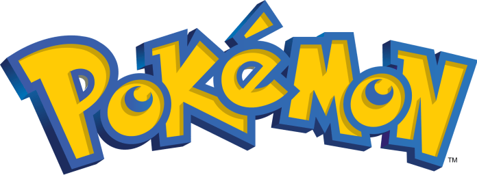
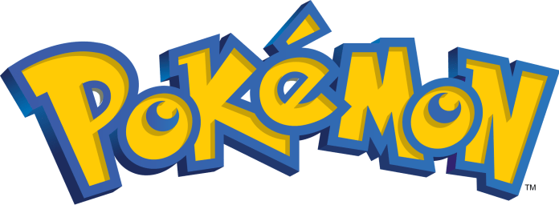

-
bulbasaur #001

- Grama
- Veneno
Bulbasaur é um pokémon de tipo grama e veneno. Pokémon tipo grama são fortes contra pokémon do tipo Água, Terra, Pedra mas eles são fracos contra pokémon do tipo Fogo, Grama, Veneno, Voador, Inseto, Dragão.
-
Ivysaur #002

- Grama
- Veneno
Ivyssauro é um Pokémon anfíbio quadrúpede que tem a pele azul-esverdeada com manchas mais escuras. Sua flor em suas costas cresce conforme à intensidade da luz do sol absorvida
-
Venusaur #003

- Grama
- Veneno
Há uma grande flor nas costas do Venusaur. Diz-se que a flor adquire cores vivas, caso receba muita nutrição e luz solar. O aroma da flor acalma as emoções das pessoas.
-
Charmander #004

- Fogo
A chama que arde na ponta da cauda é uma indicação das suas emoções. A chama vacila quando Charmander está desfrutando de si mesmo. Se o Pokémon fica furioso, a chama queima ferozmente.
-
Charmeleon #005

- Fogo
Charmeleon é um Pokérmon reptiliano. Ele tem escamas vermelhas na sua parte inferior. Existe um chifre na parte de trás da cabeça. Ele tem olhos verdes e um focinho comprido. Tem braços relativamente longos com três garras afiadas.
-
Charizard #006

- Fogo
Charizard é um Pokémon dracônico e bípede . É principalmente laranja com uma parte inferior creme do peito até a ponta da cauda. Tem um pescoço longo, pequenos olhos azuis, narinas ligeiramente levantadas.
-
Squirtle #007

- Agua
O casco de Squirtle não é apenas usado para a proteção. A forma arredondada do casco e as ranhuras em sua superfície ajudam a minimizar a resistência na água, permitindo que este Pokémon nade em altas velocidades.
-
Wartortle #008

- Agua
Sua cauda é grande e coberta com uma pele rica, espessura. A cauda torna-se cada vez mais profunda em cor com a idade de Wartortle. Os arranhões na seu casco são provas de resistência deste Pokémon como um combatente.
-
Blastoise #009

- Agua
Sua cauda é grande e coberta com uma pele rica, espessura. A cauda torna-se cada vez mais profunda em cor com a idade de Wartortle. Os arranhões na seu casco são provas de resistência deste Pokémon como um combatente.
-
Caterpie #010

- Inseto
Caterpie tem um apetite voraz. Ele pode devorar as folhas maiores do que o seu corpo bem diante dos seus olhos. A partir de sua antena, este Pokémon libera um odor terrivelmente forte.
 
